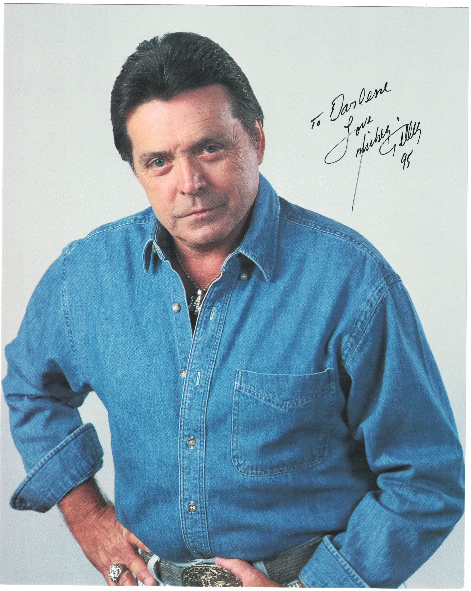

Product No. HEA-0257
$140
Shipping: $8.95
Description
Signed 8x10 color photograph. Inscribed
Full Description
Mickey Gilley (Deceased) Mickey Gilley (1936–2022) was an American country music singer, pianist, and nightclub owner who became one of the most successful country performers of the 1970s and 1980s. Born in Natchez, Mississippi, Gilley grew up in Louisiana and was a cousin of musicians Jerry Lee Lewis and Jimmy Swaggart. Influenced by Lewis, he developed a piano-driven style that blended country, rock and roll, and honky-tonk music. Gilley achieved his first major country hit in 1974 with “Room Full of Roses.” He went on to record numerous successful songs, including “Don’t the Girls All Get Prettier at Closing Time,” “Stand by Me,” “True Love Ways,” and “You Don’t Know Me.” He also became closely associated with Gilley’s Club in Pasadena, Texas, one of the largest and most famous honky-tonks in the country. The club gained international attention after being featured in the 1980 film Urban Cowboy, starring John Travolta and Debra Winger. Gilley earned numerous country music awards and placed many recordings on the country charts during his career. He continued performing for decades and remained closely identified with the Urban Cowboy era of country music. Gilley died in Branson, Missouri, in 2022 at age 86.
Condition
Excellent condition